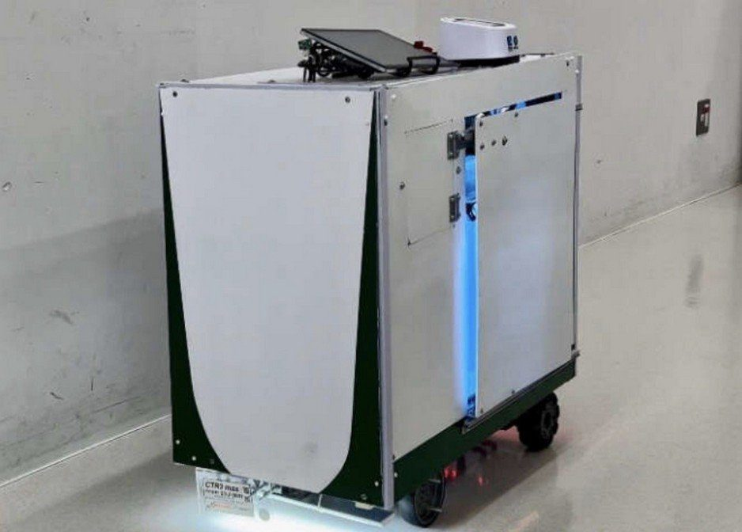
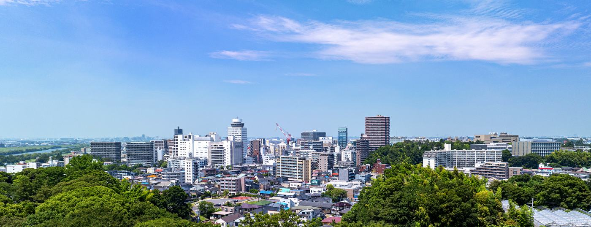
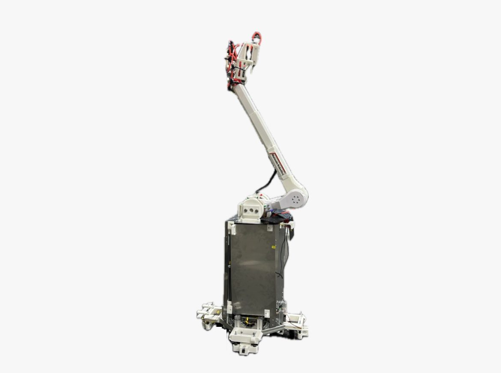

Model: CTR series 開発中
総合輸送型ロボット CTR
| 用途 | 屋内カーゴの自律搬送 |
| 特徴 | 多機能搭載・多様な環境に対応 |
| 出展 | 技育展・技育博、NT松戸 |

NPO法人 松戸技術革新センター M-TIC
松戸技術革新センター（M-TIC）は、ロボティクスの研究開発を第一事業とする非営利の技術開発機関です。
研究の内容は技術レポートとして公開しています。あわせて、ものづくり支援と科学技術教育にも取り組んでいます。
Divisions
Research
Developments

Model: CTR series 開発中
| 用途 | 屋内カーゴの自律搬送 |
| 特徴 | 多機能搭載・多様な環境に対応 |
| 出展 | 技育展・技育博、NT松戸 |

Model: CWR CAR series 開発中
| 用途 | 作業支援 |
| 特徴 | 垂直多関節アーム搭載・自動走行 |
Contact
お問い合わせはこちらからお願いします。
お問い合わせフォームへ